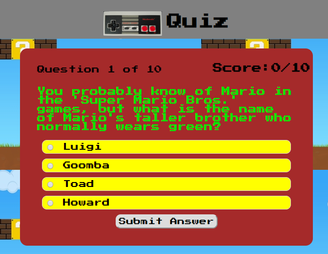

Portfolio
Nintendo Name Quiz Project
This is one of my first projects built using HTML, CSS, Javascript and JQuery. I used Nintendo as inspiration because, deep down, I am a huge Nintendo fan.


I am Silas Groskreutz and I am a full stack developer residing in the Madison, Wisconsin area. I have experience with HTML, CSS, Javascript, and JQuery. I enjoy working with technology and using it to make our lives better. I have previously worked IT roles where I was a ‘jack of all trades, master of none’ and software development was the next step I wanted to take with my career.